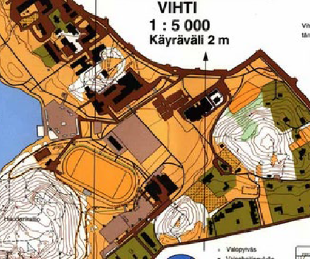
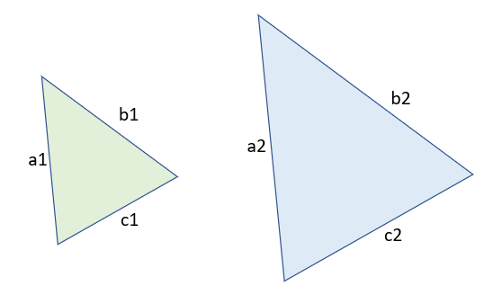
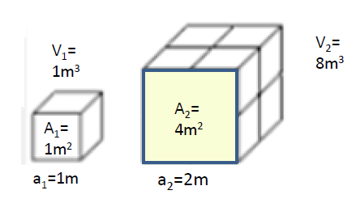
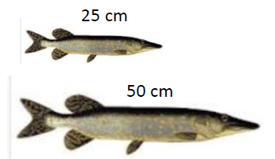
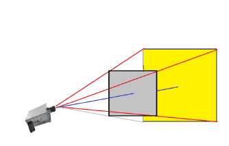
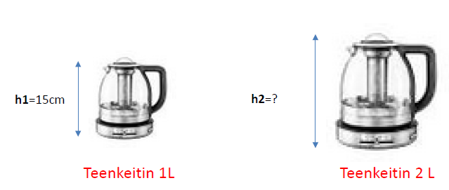

Mittakaava
Sisällys
Mittakaava¶
Kartan mittakaava
Mittakaava on suhdeluku, joka kertoo kuvan, kartan tai piirroksen ja sen esittämän todellisen kohteen mittojen välisen suhteen.
Esim. mittakaava 1:100 tarkoittaa, että yksi yksikkö kartalla vastaa 100 yksikköä todellisessa kohteessa.
Mittakaavaa käytetään erityisesti kartoissa ja pienoismalleissa.
Esimerkki

a) Kuinka pitkä on maastossa jana, joka kartalla on 2.5 cm?
b) Arvioi kartalla olevan stadionin pinta-ala, kun sen koko kartalla on \(2.5cm\cdot 1.2cm = 3.0 cm^2\)
Ratkaisu
a) janan pituus on \(5000 \cdot 2.5cm = 12500cm = 125 m\)
b) stadionin ala on \(5000 \cdot 2.5cm \cdot 5000 \cdot 1.2cm =75000000 cm^2=7500 cm^2 = 0.75 ha\)
Yhdenmuotoisuus ja mittakaava¶
Yhdenmuotoisuus
Yhdenmuotoiset kuviot ovat samanmuotoisia, mutta eri kokoisia. Yhdenmuotoisissa kuvioissa kulmat ovat yhtäsuuria, mutta vastinjanat ovat joko tietyssä suhteessa tehtyjä suurennoksia tai pienennöksiä.

Kuvan kolmioista oikeanpuolimmainen on vasemmanpuolimmaisen kolmion kuva mittakaavassa \(k=\frac{a_2}{a_1}\)
Sama pätee muillekin vastinsivujen suhteille: \(k=\frac{b_2}{b_1}\) ja \(k=\frac{c_2}{c_1}\)
Lisäksi on on voimassa \(a_1:b_1:c_1 = a_2:b_2:c_2\)
Paperille on piirretty neliö, jonka sivun pituus on 6 cm. Piirretään alkuperäisestä neliöstä pienennös mittakaavassa 2 : 3. Mikä on uusi sivun pituus?
Merkitään pienennetyn kolmion sivua x:llä.
Tällöin \(x=k\cdot \text{6cm}=\frac{2}{3}\cdot \text{6cm}=\text{4cm}\)
Paperille on piirretty neliö, jonka sivun pituus on 6 cm. Piirretään alkuperäisestä neliöstä suurennos mittakaavassa 4 : 3. Mikä on uusi sivun pituus?
Merkitään pienennetyn kolmion sivua x:llä.
Tällöin \(x=k\cdot \text{6cm}=\frac{4}{3}\cdot \text{6cm}=\text{8cm}\)
Pinta-alat ja tilavuudet yhdenmuotoisissa kuvioissa ja kappaleissa¶
Yhdenmuotoisuus
Yhdenmuotoisissa kuvioissa mittakaavalla tarkoitetaan vastinjanojen suhdetta
\(\frac{a_2}{a_1}=k\)
Vastinpinta-alojen suhde on mittakaavan neliö
\(\frac{A_2}{A_1}=k^{2}\)
Yhdenmuotoisten kappaleiden tilavuuksien suhde on mittakaavan kuutio
\(\frac{V_2}{V_1}=k^{3}\)
Kaavoja voidaan perustella esim. ao. kuvalla, jossa on kaksi yhdenmuotoista kuutiota, jossa
sivujen suhde on 2, vastinpinta-alojen suhde 4 ja tilavuuksien suhde 8.

Hauet
Monikokertainen on isomman hauen massa pienempään verrattuna, kun hauet ovat yhdenmuotoisia ja niiden keskitiheys on sama?

Ratkaisu
Vastaus: massa on 8-kertainen, koska tilavuuksien suhde on \(k^3 = (50cm/25cm)^3 = 8\)
Projektori
Monikokertainen on projektorin kuvan pinta-ala varjostimella alkuperäiseen verrattuna, jos projektori siirretään 2- kertaiselle etäisyydelle?

Ratkaisu
Kuvakartiot ovat yhdenmuotoisia pyramidin muotoisia kappaleita. Kun pyramidin korkeus kaksinkertaistuu,
kuvan ala 4-kertaistuu, koska alojen suhde on \(k^2 = (2)^2 = 4\)
Vedenkeittimet
Eräällä valmistajalla on kaksi yhdenmuotoista vedenkeitintä, joista pienemmän korkeus on 15 cm ja tilavuus 1 litra. Mikä on suuremman 2 litran keittimen korkeus?

Ratkaisu
Tilavuuksien suhde = mittakaavan kuutio: ts. \(k^3 = 2\), josta voidaan ratkaista suuremman keittimen mittakaava pienempään verrattuna:
\(k= \sqrt[3]{2}= 1.26\). Isomman keittimen korkeus on siten \(1.26\cdot15cm=18.9 cm\)